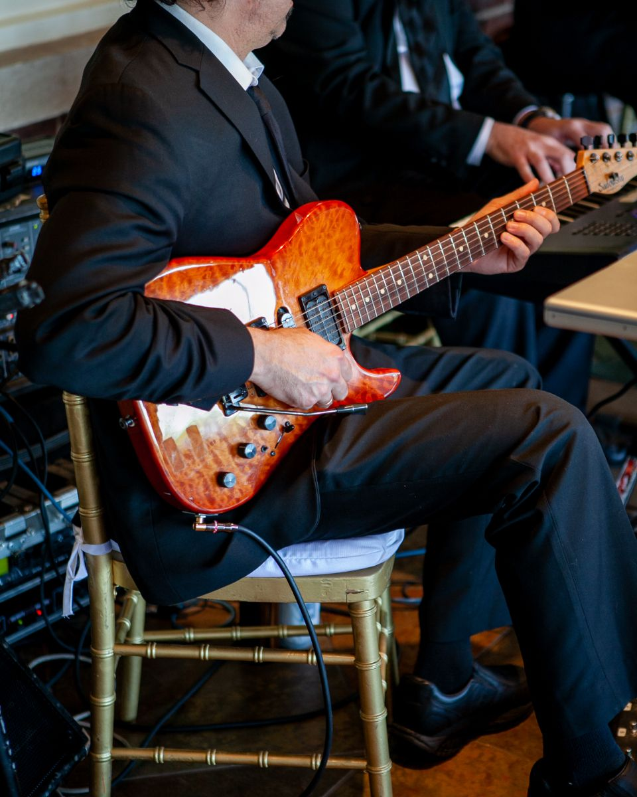

The Anchor & Oak
About
Pub & kitchen · Lymington
Our story
Pull up a stool
Built as a harbour inn in the 1890s, the Anchor & Oak has served fishermen, sailors and townsfolk for generations. The beams are original; the beer is fresh.
Our kitchen uses fish landed on the south coast, meat from a butcher in the New Forest and vegetables from local growers. Our ales come from breweries within thirty miles.
Muddy boots, dogs and families are all welcome. In summer the beer garden fills up early, and in winter the fire is lit by noon.


Reviews
What people say
★★★★★“Best fish and chips on the coast and a lovely pint of local ale. Friendly staff.”James R., Lymington
★★★★★“Sunday roast was superb. Huge Yorkshire puddings. Book ahead!”The Hendersons
★★★★★“Great quiz night and a really warm atmosphere. Our new local.”Chloe & Dan
Example reviews for this demo website.


The Anchor & Oak
See you at the bar.
4 Quay Street, Lymington, Hampshire SO41 3AS